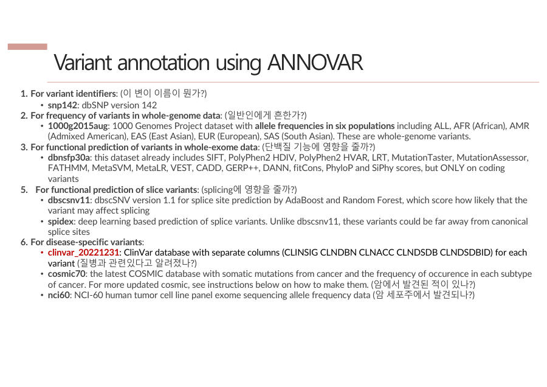

8장. Annotation — 찾은 변이의 뜻 찾기
VCF에는 변이가 어디에 있는지만 적혀 있어요. 이 장에서는 그 변이가 무슨 의미인지 여러 데이터베이스(DB)에서 찾아보는 Annotation과 ANNOVAR를 배워요.
8-1. Annotation이 뭐고, 왜 필요한가요
7장까지 하면 VCF 파일이 나와요. 그런데 VCF는 "1번 염색체 100번째 자리가 C에서 T로 바뀌었다" 정도만 알려줘요. 그 변이가 흔한지, 병과 관련 있는지는 몰라요.
이 변이의 뜻을 알려면 이미 알려진 자료를 찾아봐야 해요. 이 일을 Annotation이라고 하고, 쓰는 도구가 ANNOVAR예요.
Annotation(주석 달기)은 찾은 변이가 무슨 의미인지 데이터베이스(DB)와 연결하는 일이에요. ANNOVAR는 ANNOtate VARiation, 그러니까 "변이에 주석 달기"의 줄임말이에요.
오타 목록(VCF)을 들고 여러 가지 사전을 찾아보는 일이에요. "이 오타는 이름이 뭐지? 흔한 오타인가? 문장 뜻이 달라지나? 병이랑 관련 있나?" 하고 사전마다 물어봐요.
왜 사전이 여러 개일까요? 사전마다 아는 분야가 다르기 때문이에요. 이름 사전, 흔한 정도 사전, 병 사전을 모두 찾아야 변이의 뜻이 완성돼요.
Annotation은 variant calling으로 찾은 변이가 어떤 의미를 갖는지 여러 데이터베이스와 연결해 해석하는 과정이며, 대표 도구는 ANNOVAR(ANNOtate VARiation)이다.
잠깐 확인 — VCF만으로는 왜 변이의 의미를 알 수 없나요?
VCF에는 변이의 위치와 글자 변화만 있고, 그 변이가 흔한지·병과 관련 있는지 같은 정보는 없기 때문이에요. 그래서 DB와 연결하는 Annotation이 필요해요.
8-2. DB 사전 5권 — 각각 무엇을 물어보나요
시험에 가장 자주 나오는 부분이에요. 각 DB가 어떤 질문에 답하는지만 짝지어 외우면 돼요.
| DB (사전) | 답해 주는 질문 |
|---|---|
| dbSNP | 이 변이 이름이 뭔가? (rs번호) |
| 1000 Genomes | 일반인한테 흔한가? |
| dbNSFP | 단백질 기능에 영향을 주나? |
| dbscSNV · SPIDEX | 스플라이싱에 영향을 주나? |
| ClinVar | 질병과 관련 있나? (병원성 / 무해) |
풀어서 설명해 볼게요.
- dbSNP — 사람 번호표 같은 이름 사전이에요. 변이마다 rs번호라는 이름이 붙어 있어서 "rs○○○"로 불러요. BQSR(7장)에서 정답지로 쓴 것도 이 DB예요.
- 1000 Genomes — 많은 사람의 유전체를 모아 둔 자료예요. 이 변이가 일반인에게 흔하면 병과 관련 없는 평범한 차이일 가능성이 커요.
- dbNSFP — 변이가 단백질 기능에 영향을 줄지 알려 줘요. 단백질이 만들어지는 데 쓰이는 부분이 바뀌면 단백질이 달라질 수 있어서예요.
- dbscSNV · SPIDEX — 스플라이싱(splicing)에 영향을 주는지 알려 줘요. 스플라이싱은 RNA에서 필요 없는 부분(인트론)을 잘라 내고 필요한 부분(엑손)만 이어 붙이는 과정이에요. 잘라 붙이는 자리가 바뀌면 결과물이 달라질 수 있어요.
- ClinVar — 병원에서 모은 변이와 질병의 관계 사전이에요. 결과는 병원성(pathogenic)인지 무해(benign)인지로 나와요.
이름(dbSNP) → 흔함(1000 Genomes) → 단백질(dbNSFP) → 스플라이싱(dbscSNV·SPIDEX) → 병(ClinVar). 질문 5개를 순서대로 외우세요. 시험의 단골은 ClinVar = 질병 관련이에요.
슬라이드 88쪽에는 암 관련 DB도 있었어요. cosmic70은 "암에서 발견된 적이 있나?", nci60은 "암 세포주에서 발견되나?"를 물어요. 위 5개보다는 덜 중요해요.

변이가 질병과 관련 있는지 확인하는 대표 DB는 ClinVar이다. dbSNP는 변이의 이름(rs번호), 1000 Genomes는 일반인에서의 빈도, dbNSFP는 단백질 기능에 미치는 영향, dbscSNV·SPIDEX는 스플라이싱에 미치는 영향을 알려 준다.
잠깐 확인 — "이 변이가 일반인한테 흔한가?"는 어느 DB에 물어보나요?
1000 Genomes예요. 이름은 dbSNP, 단백질 기능은 dbNSFP, 질병은 ClinVar에 물어봐요.
8-3. ANNOVAR의 방식 3가지
ANNOVAR가 변이에 의미를 붙이는 방법은 세 가지예요. 모두 "이 변이가 어디에 있나?" 또는 "이미 알려져 있나?"를 묻는 방식이에요.
택배 주소를 찾는 세 가지 방법이에요. Gene-based는 "어느 건물(유전자) 안인가", Region-based는 "어느 구역(기능 영역)인가", Filter-based는 "이미 주소록(특정 DB)에 있는가"예요.
| 방식 | 묻는 질문 | 예 |
|---|---|---|
| Gene-based | 유전자 안에 있나? (단백질 코딩 영역인가) | refGene |
| Region-based | 기능이 있는 영역인가? (전사인자 결합부위 등) | cytoBand |
| Filter-based | 특정 DB에 들어 있나? | ClinVar, 1000 Genomes 등 |
Gene-based 결과는 변이의 위치를 세 가지 중 하나로 알려 줘요. exonic(엑손 안, 단백질이 되는 부분), intronic(인트론 안, 잘려 나가는 부분), intergenic(유전자와 유전자 사이)예요.
실행할 때는 명령 한 줄에 DB를 쉼표로 쭉 나열해요. 그리고 방식도 같은 순서로 g(gene-based), r(region-based), f(filter-based)로 적어요. 위 표의 refGene은 g, cytoBand는 r, 나머지는 f예요.
ANNOVAR의 annotation 방식은 세 가지이다. Gene-based는 변이가 유전자(단백질 코딩 영역) 안에 있는지, Region-based는 전사인자 결합부위 같은 기능 영역에 있는지, Filter-based는 변이가 특정 DB에 존재하는지를 확인한다.
잠깐 확인 — "이 변이가 ClinVar에 들어 있나?"는 어느 방식인가요?
Filter-based예요. 특정 DB에 있는지 확인하는 방식이고, 명령에서는 f로 적어요.
8-4. 실행 순서 — VCF에서 결과 표까지
ANNOVAR는 Perl이라는 언어로 만든 도구인데, 언어를 알 필요는 없어요. 순서만 알면 돼요.
- DB 내려받기 — 쓸 DB를 미리 다운로드해 둬요(
annotate_variation.pl -downdb). - VCF → avinput 변환 —
convert2annovar로 ANNOVAR가 읽기 쉬운 입력 형식(avinput, 탭으로 구분한 텍스트)으로 바꿔요. - Annotation —
table_annovar로 DB들을 한꺼번에 찾아서 표로 정리해요.
참고로 --vcfinput 옵션을 쓰면 VCF를 변환 없이 바로 넣을 수도 있어요. 결과 표에서는 refGene 칸으로 위치(exonic·intronic·intergenic)를 보고, ClinVar 칸으로 benign인지 pathogenic인지를 봐요.
순서는 VCF → convert2annovar → (avinput) → table_annovar → 결과 표예요. 옵션은 외울 필요 없어요. 교수님도 이 부분은 시간이 오래 걸려서 이론으로만 다뤘어요.
VCF를 convert2annovar로 avinput 형식으로 변환한 뒤 table_annovar로 여러 DB와 연결하면, 각 변이의 유전자 내 위치와 빈도, 질병 관련성 등이 담긴 annotation 표를 얻는다.
잠깐 확인 — convert2annovar는 무엇을 하는 단계인가요?
VCF를 ANNOVAR가 읽기 쉬운 입력 형식인 avinput으로 바꿔요. 그다음에 table_annovar가 annotation을 해요.
8-5. GWAS — 병과 관련된 위치를 찾는 연구
Annotation은 변이 하나의 뜻을 찾는 일이에요. 반대로 GWAS는 "이 병은 어떤 변이와 관련이 있을까?"를 많은 사람을 비교해서 찾는 연구예요.
GWAS(Genome-Wide Association Study, 전장 유전체 연관 분석)는 환자군과 정상군을 비교해서 병과 관련된 위치를 찾는 연구예요.
두 반의 급식 메뉴를 비교해서 배탈이 난 반에만 유독 많았던 메뉴를 찾는 것과 비슷해요. 환자 쪽에만 유독 많이 나타나는 변이 위치가 병과 관련 있다고 보는 거예요.
GWAS(Genome-Wide Association Study)는 환자군과 정상군의 유전체를 비교하여 질병과 관련된 변이의 위치를 찾는 연구이다.
잠깐 확인 — GWAS는 무엇과 무엇을 비교하나요?
환자군과 정상군이에요. 그래서 질병과 관련된 위치를 찾아요.
- Annotation은 찾은 변이의 의미를 DB와 연결하는 일이고, 도구는 ANNOVAR(ANNOtate VARiation)예요.
- DB별 질문은 dbSNP 이름, 1000 Genomes 흔한가, dbNSFP 단백질 기능, dbscSNV·SPIDEX 스플라이싱, ClinVar 질병이에요. 방식은 Gene-based·Region-based·Filter-based 세 가지예요.
- 순서는 VCF → convert2annovar → table_annovar이고, GWAS는 환자군과 정상군을 비교해 병과 관련된 위치를 찾는 연구예요.